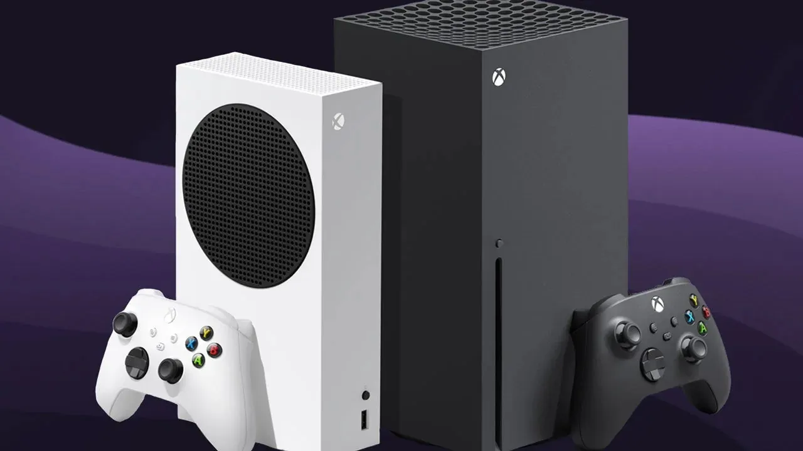
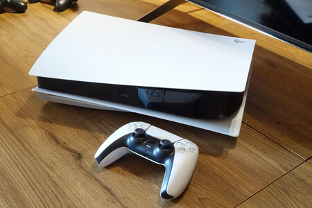

A pesar de que ya se anuncio la nintendo switch 2 para 2024, siguen saliendo juegos para esta consola
- Super Mario Wonder
- Prince of Persia: The last crown
- Another Code: Recollection
Xbox Series S/X
Xbox sigue con sus clasicos, veamos que sucede este ano con la reciente compra de activision
- Tekken 8
- Persona 5 Tactica
- Like a Dragon: Infinite Wealth
PlayStation 5
Sony se ha visto afectada por los exlusivos que ha tenido Microsoft pero sigue lanzando muy buenos juegos con excelente calidad
- Final Fantasy VII Rebirth
- Star Wars: Dark Forces Remaster
- Suicide Squad: Kill the Justice League